pacman::p_load(tidyverse, sf, readr, spatstat, raster, ggstatsplot, ggplot2, tmap, osmdata, dplyr, patchwork, animation, png, magick)Take-home Exercise 1: Geospatial Analytics for Social Good: Application of Spatial and Spatio-temporal Point Patterns Analysis to discover the geographical distribution of Armed Conflict in Myanmar
Introduction
The Rise of Armed Conflict and the Potential of Geospatial Analytics
Impact: Millions of lives are shattered by armed conflict each year.
Trend: Armed conflict has been on the rise since around 2012, reversing the decline from the 1990s and early 2000s.
Recent Major Conflicts:
Libya, Syria, and Yemen (post-2011): Instabilities following the Arab uprisings.
Sahel Region: Crisis exacerbated by Libya’s instability.
Azerbaijan-Armenian War (2020): Conflict over the Nagorno-Karabakh enclave.
Ethiopia’s Tigray Conflict (2020): Severe fighting in the northern region.
Myanmar (2021): Conflict following the military’s power grab.
Russia-Ukraine War (2022): Major assault by Russia on Ukraine.
Sudan and Gaza (2023): New devastating conflicts.
- Current Situation: The number of people affected—through death, displacement, or need for humanitarian aid—is higher than in decades.
This Geospatial Analytics will Focus on:
Objective: This study will use spatial point patterns analysis to explore the spatial and spatio-temporal distribution of armed conflict in Myanmar.
Potential: Geospatial analytics offer tremendous potential to address complex societal problems, providing insights into the patterns and dynamics of conflict.
Source: 10 Conflicts to Watch in 2024
1.0 Setup
1.1 Installing R-Packages
sf:For handling spatial vector data and transforming it into simple features (
sf) objects.Functions like
st_read()for importing spatial data andst_transform()for coordinate reference system transformations.
tidyverse: For data manipulation and transformation, including functions for working withtibbledata frames.readr: For reading in CSV or other text-based data files if needed.dplyr: provide data manipulation capabilities (eg. to group and summarize the relationships between these columns)
patchwork: To arrange map layout
spatstat: For kernel density estimation (KDE) and spatial point pattern analysis.stars: For working with raster data and creating raster-based KDE layers.raster: Additional functions for raster operations, if necessary.
spatstat: For analyzing second-order spatial point patterns, such as pair correlation functions.ggplot2: For visualizing the results of spatial analysis.animation, png, magick: For animation work
spatstat: For spatio-temporal point pattern analysis and creating spatio-temporal KDE layers.stars: For handling spatio-temporal raster data.
spatstat: For advanced spatio-temporal analysis, including the study of second-order effects over time.
tmap: For creating thematic maps and displaying KDE layers.ggplot2: For additional custom visualizations if needed.leaflet: For interactive maps, if required.osmdata: To fetch and integrate OpenStreetMap data for background maps.
1.2 Data Acquisition
We will be using 2 sets of data:
Source: Armed Conflict Location & Event Data (ACLED). ACLED is an independent, impartial international non-profit organization that collects data on violent conflict and protests worldwide.
Coverage: Myanmar, from January 2021 to June 2024.
Event Types: Focus on at least four main event types:
Battles
Explosion/Remote Violence
Strategic Developments
Violence Against Civilians
Study Period: Quarterly armed conflict events from January 2021 to June 2024.
- Source: Myanmar Information Management Unit (MIMU).
- For Broad Analysis:
National Boundaries: To get an overview of conflict patterns across the entire country.
State and Region with Sub-region Boundaries: For understanding conflict distribution across larger administrative divisions.
- For Detailed Local Analysis:
District Boundaries: Useful for a more detailed view of conflict distribution within specific districts.
Township and Ward Boundaries: For very granular analysis, especially useful if you’re interested in the impact at the community level.
- Self-Administered Region Boundaries: For Analyzing Conflict Dynamics in Self-Administered Regions (SARs) Relative to Administrative Autonomy
1.3 Importing Geospatial Data into R
acled_sf <- read_csv("data/ACLED_Myanmar.csv")Rows: 51553 Columns: 31
── Column specification ────────────────────────────────────────────────────────
Delimiter: ","
chr (20): event_id_cnty, event_date, disorder_type, event_type, sub_event_ty...
dbl (11): year, time_precision, inter1, inter2, interaction, iso, latitude, ...
ℹ Use `spec()` to retrieve the full column specification for this data.
ℹ Specify the column types or set `show_col_types = FALSE` to quiet this message.- For Broad Analysis:
national_boundaries <- st_read(dsn = "data/National_Boundaries", layer="mmr_polbnda_adm0_250k_mimu_1")Reading layer `mmr_polbnda_adm0_250k_mimu_1' from data source
`C:\Users\ngkng\Desktop\School\Geo -Local\Take-home_Ex\Take-home_Ex01\data\National_Boundaries'
using driver `ESRI Shapefile'
Simple feature collection with 1 feature and 2 fields
Geometry type: MULTIPOLYGON
Dimension: XY
Bounding box: xmin: 92.1721 ymin: 9.696844 xmax: 101.17 ymax: 28.54554
Geodetic CRS: WGS 84state_region_subregion_boundaries <- st_read(dsn = "data/State_And_Region_With_Sub-regions_Boundaries", layer="mmr_polbnda2_adm1_250k_mimu_1")Reading layer `mmr_polbnda2_adm1_250k_mimu_1' from data source
`C:\Users\ngkng\Desktop\School\Geo -Local\Take-home_Ex\Take-home_Ex01\data\State_And_Region_With_Sub-regions_Boundaries'
using driver `ESRI Shapefile'
Simple feature collection with 18 features and 6 fields
Geometry type: MULTIPOLYGON
Dimension: XY
Bounding box: xmin: 92.1721 ymin: 9.696844 xmax: 101.17 ymax: 28.54554
Geodetic CRS: WGS 84- For Detailed Local Analysis:
district_boundaries <- st_read(dsn = "data/District_Boundaries", layer="mmr_polbnda_adm2_250k_mimu")Reading layer `mmr_polbnda_adm2_250k_mimu' from data source
`C:\Users\ngkng\Desktop\School\Geo -Local\Take-home_Ex\Take-home_Ex01\data\District_Boundaries'
using driver `ESRI Shapefile'
Simple feature collection with 80 features and 7 fields
Geometry type: MULTIPOLYGON
Dimension: XY
Bounding box: xmin: 92.1721 ymin: 9.696844 xmax: 101.17 ymax: 28.54554
Geodetic CRS: WGS 84township_boundaries <- st_read(dsn = "data/Township_Boundaries", layer="mmr_polbnda_adm3_250k_mimu_1")Reading layer `mmr_polbnda_adm3_250k_mimu_1' from data source
`C:\Users\ngkng\Desktop\School\Geo -Local\Take-home_Ex\Take-home_Ex01\data\Township_Boundaries'
using driver `ESRI Shapefile'
Simple feature collection with 330 features and 9 fields
Geometry type: MULTIPOLYGON
Dimension: XY
Bounding box: xmin: 92.1721 ymin: 9.696844 xmax: 101.17 ymax: 28.54554
Geodetic CRS: WGS 84ward_boundaries <- st_read(dsn = "data/Ward_Boundaries", layer="mmr_polbnda_adm5_mimu_v9_4")Reading layer `mmr_polbnda_adm5_mimu_v9_4' from data source
`C:\Users\ngkng\Desktop\School\Geo -Local\Take-home_Ex\Take-home_Ex01\data\Ward_Boundaries'
using driver `ESRI Shapefile'
Simple feature collection with 1999 features and 15 fields (with 1 geometry empty)
Geometry type: MULTIPOLYGON
Dimension: XY
Bounding box: xmin: 92.34521 ymin: 9.974381 xmax: 100.3662 ymax: 27.29535
Geodetic CRS: WGS 84- Self-Administered region Boundaries
self_administered_boundaries <- st_read(dsn = "data/Self_Administered_Region_Boundaries", layer="mmr_polbnda_self_administered_zones_1")Reading layer `mmr_polbnda_self_administered_zones_1' from data source
`C:\Users\ngkng\Desktop\School\Geo -Local\Take-home_Ex\Take-home_Ex01\data\Self_Administered_Region_Boundaries'
using driver `ESRI Shapefile'
Simple feature collection with 6 features and 10 fields
Geometry type: MULTIPOLYGON
Dimension: XY
Bounding box: xmin: 94.5777 ymin: 19.74308 xmax: 99.56572 ymax: 27.37205
Geodetic CRS: WGS 841.4 Checking Geospatial Data
class(acled_sf)[1] "spec_tbl_df" "tbl_df" "tbl" "data.frame" st_crs(acled_sf)Coordinate Reference System: NA
Note
Since
- Since the class of acled_sf != sf object
- Coordinate Reference System of acled_sf = NA
we have to transform it.
class(national_boundaries)[1] "sf" "data.frame"st_crs(national_boundaries)Coordinate Reference System:
User input: WGS 84
wkt:
GEOGCRS["WGS 84",
DATUM["World Geodetic System 1984",
ELLIPSOID["WGS 84",6378137,298.257223563,
LENGTHUNIT["metre",1]]],
PRIMEM["Greenwich",0,
ANGLEUNIT["degree",0.0174532925199433]],
CS[ellipsoidal,2],
AXIS["latitude",north,
ORDER[1],
ANGLEUNIT["degree",0.0174532925199433]],
AXIS["longitude",east,
ORDER[2],
ANGLEUNIT["degree",0.0174532925199433]],
ID["EPSG",4326]]class(state_region_subregion_boundaries)[1] "sf" "data.frame"st_crs(state_region_subregion_boundaries)Coordinate Reference System:
User input: WGS 84
wkt:
GEOGCRS["WGS 84",
DATUM["World Geodetic System 1984",
ELLIPSOID["WGS 84",6378137,298.257223563,
LENGTHUNIT["metre",1]]],
PRIMEM["Greenwich",0,
ANGLEUNIT["degree",0.0174532925199433]],
CS[ellipsoidal,2],
AXIS["latitude",north,
ORDER[1],
ANGLEUNIT["degree",0.0174532925199433]],
AXIS["longitude",east,
ORDER[2],
ANGLEUNIT["degree",0.0174532925199433]],
ID["EPSG",4326]]class(district_boundaries)[1] "sf" "data.frame"st_crs(district_boundaries)Coordinate Reference System:
User input: WGS 84
wkt:
GEOGCRS["WGS 84",
DATUM["World Geodetic System 1984",
ELLIPSOID["WGS 84",6378137,298.257223563,
LENGTHUNIT["metre",1]]],
PRIMEM["Greenwich",0,
ANGLEUNIT["degree",0.0174532925199433]],
CS[ellipsoidal,2],
AXIS["latitude",north,
ORDER[1],
ANGLEUNIT["degree",0.0174532925199433]],
AXIS["longitude",east,
ORDER[2],
ANGLEUNIT["degree",0.0174532925199433]],
ID["EPSG",4326]]class(township_boundaries)[1] "sf" "data.frame"st_crs(township_boundaries)Coordinate Reference System:
User input: WGS 84
wkt:
GEOGCRS["WGS 84",
DATUM["World Geodetic System 1984",
ELLIPSOID["WGS 84",6378137,298.257223563,
LENGTHUNIT["metre",1]]],
PRIMEM["Greenwich",0,
ANGLEUNIT["degree",0.0174532925199433]],
CS[ellipsoidal,2],
AXIS["latitude",north,
ORDER[1],
ANGLEUNIT["degree",0.0174532925199433]],
AXIS["longitude",east,
ORDER[2],
ANGLEUNIT["degree",0.0174532925199433]],
ID["EPSG",4326]]class(ward_boundaries)[1] "sf" "data.frame"st_crs(ward_boundaries)Coordinate Reference System:
User input: WGS 84
wkt:
GEOGCRS["WGS 84",
DATUM["World Geodetic System 1984",
ELLIPSOID["WGS 84",6378137,298.257223563,
LENGTHUNIT["metre",1]]],
PRIMEM["Greenwich",0,
ANGLEUNIT["degree",0.0174532925199433]],
CS[ellipsoidal,2],
AXIS["latitude",north,
ORDER[1],
ANGLEUNIT["degree",0.0174532925199433]],
AXIS["longitude",east,
ORDER[2],
ANGLEUNIT["degree",0.0174532925199433]],
ID["EPSG",4326]]class(self_administered_boundaries)[1] "sf" "data.frame"st_crs(self_administered_boundaries)Coordinate Reference System:
User input: WGS 84
wkt:
GEOGCRS["WGS 84",
DATUM["World Geodetic System 1984",
ELLIPSOID["WGS 84",6378137,298.257223563,
LENGTHUNIT["metre",1]]],
PRIMEM["Greenwich",0,
ANGLEUNIT["degree",0.0174532925199433]],
CS[ellipsoidal,2],
AXIS["latitude",north,
ORDER[1],
ANGLEUNIT["degree",0.0174532925199433]],
AXIS["longitude",east,
ORDER[2],
ANGLEUNIT["degree",0.0174532925199433]],
ID["EPSG",4326]]
Note
Since Coordinate Reference System of
- national_boundaries
- state_region_subregion_boundaries
- district_boundaries
- township_boundaries
- ward_boundaries
- self_administered_boundaries
is in 4326 (unit of measurement = degree), we have to transform it
1.5 Understanding the data
# Select relevant columns and group by disorder_type, event_type, sub_event_type
type_of_conflict <- acled_sf %>%
dplyr::select(disorder_type, event_type, sub_event_type) %>%
group_by(disorder_type, event_type, sub_event_type) %>%
summarize(count = n(), .groups = 'drop') # Count occurrences of each combination
print(type_of_conflict, n = Inf)# A tibble: 25 × 4
disorder_type event_type sub_event_type count
<chr> <chr> <chr> <int>
1 Demonstrations Protests Peaceful prot… 8132
2 Demonstrations Protests Protest with … 463
3 Demonstrations Riots Violent demon… 94
4 Political violence Battles Armed clash 11770
5 Political violence Battles Government re… 5
6 Political violence Battles Non-state act… 274
7 Political violence Explosions/Remote vi… Air/drone str… 2646
8 Political violence Explosions/Remote vi… Chemical weap… 1
9 Political violence Explosions/Remote vi… Grenade 393
10 Political violence Explosions/Remote vi… Remote explos… 5511
11 Political violence Explosions/Remote vi… Shelling/arti… 3655
12 Political violence Explosions/Remote vi… Suicide bomb 2
13 Political violence Riots Mob violence 22
14 Political violence Violence against civ… Abduction/for… 905
15 Political violence Violence against civ… Attack 5257
16 Political violence Violence against civ… Sexual violen… 63
17 Political violence; Demonstrations Protests Excessive for… 234
18 Strategic developments Strategic developmen… Agreement 10
19 Strategic developments Strategic developmen… Arrests 4833
20 Strategic developments Strategic developmen… Change to gro… 1346
21 Strategic developments Strategic developmen… Disrupted wea… 325
22 Strategic developments Strategic developmen… Headquarters … 67
23 Strategic developments Strategic developmen… Looting/prope… 4042
24 Strategic developments Strategic developmen… Non-violent t… 28
25 Strategic developments Strategic developmen… Other 1475
Note!
The dataset includes non-conflict events such as:
“Change to group/activity”
“Agreement”
“Headquarters or base established”
Additionally, it contains a sub-event category labeled “Other”. Including these non-conflict events under the general category of “conflict nature” may lead to biased or misleading interpretations. To ensure accurate and meaningful analysis, I recommend removing these non-conflict events from the dataset.
1.6 Data Preparation and Wrangling
Convert Data Frame to sf Object
acled_sf <- acled_sf %>%
st_as_sf(coords = c("longitude", "latitude"), crs = 4326)
class(acled_sf)[1] "sf" "tbl_df" "tbl" "data.frame"Transform Coordinate Reference System
acled_sf <- acled_sf %>%
st_transform(crs = 32647)Convert Date Column to Date Format
acled_sf <- acled_sf %>%
mutate(event_date = dmy(event_date))Eliminating Columns not used for analysis
acled_sf <- acled_sf[, !(names(acled_sf) %in% c("event_id_cnty", "time_precision", "inter1", "inter2", "notes", "tags"))]Preparing Data for Quarterly KDE Analysis
- Create a Quarter Column
acled_sf <- acled_sf %>%
mutate(quarter = paste0("Q", quarter(event_date), "-", year(event_date)))- Remove non-conflict data
non_conflict_events <- c(
"Change to group/activity",
"Agreement",
"Headquarters or base established",
"Other"
)
# Filter out the non-conflict events from the dataset
conflict_acled_sf_data <- acled_sf %>%
filter(!sub_event_type %in% non_conflict_events)Adding a new analysis dimension: month
conflict_acled_sf_data <- conflict_acled_sf_data %>%
mutate(month = month(event_date))Transform the Coordinate Reference System of these:
national_boundaries <- national_boundaries %>%
st_transform(crs = 32647)
state_region_subregion_boundaries <- state_region_subregion_boundaries %>%
st_transform(crs = 32647)
district_boundaries <- district_boundaries %>%
st_transform(crs = 32647)
township_boundaries <- township_boundaries %>%
st_transform(crs = 32647)
ward_boundaries <- ward_boundaries %>%
st_transform(crs = 32647)
self_administered_boundaries <- self_administered_boundaries %>%
st_transform(crs = 32647)Sample plot
ggplot(data = state_region_subregion_boundaries) +
geom_sf() +
theme_minimal() +
labs(title = "Map of Geometries",
subtitle = "Displaying multipolygon geometries",
caption = "Source: Example Data")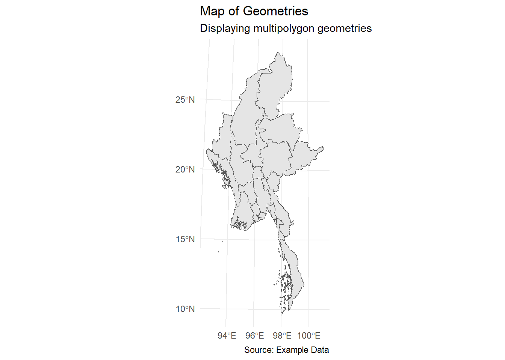
2.0 Exploratory Data Analysis
2.1 Temporal Analysis: Frequency of Conflict Events Over Time
ggplot(conflict_acled_sf_data, aes(x = event_date)) +
geom_histogram(binwidth = 30, fill = "steelblue", color = "black") +
labs(title = "Conflict Events Over Time", x = "Date", y = "Number of Events")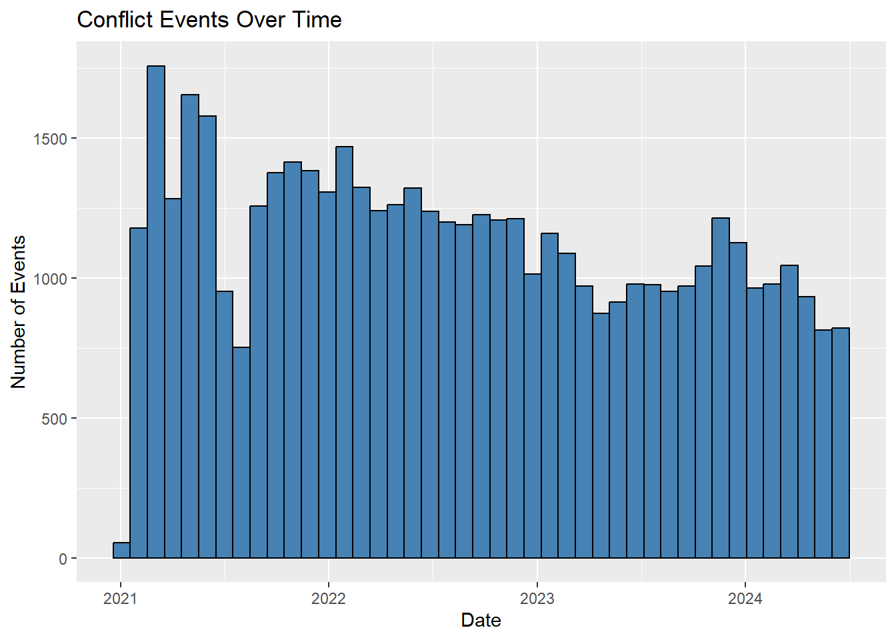
2.2 Event Type Distribution
ggplot(conflict_acled_sf_data, aes(x = event_date, fill = event_type)) +
geom_histogram(binwidth = 30) +
labs(title = "Event Types Over Time", x = "Date", y = "Number of Events") +
theme_minimal()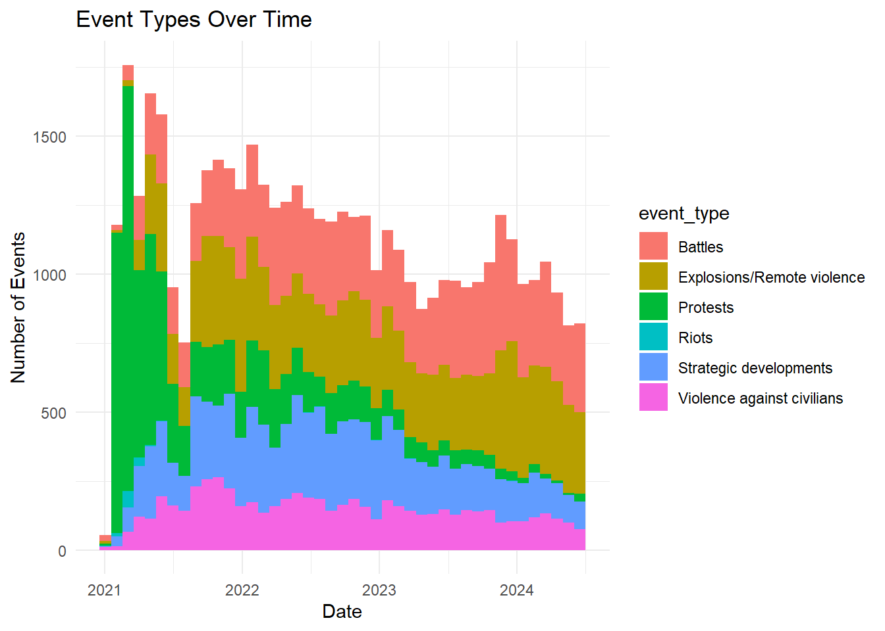
2.3 Spatial Analysis
# Plot a choropleth of the conflict events by year using ggplot2
ggplot() +
geom_sf(data = national_boundaries, fill = "lightgrey") +
geom_sf(data = conflict_acled_sf_data, aes(color = event_type), size = 0.1, alpha = 0.6) +
facet_wrap(~year, ncol = 4) + # Facet by year with 4 columns
labs(title = "Spatial Distribution of Conflict Events by Year", color = "Event Type") +
theme_minimal() +
theme(legend.position = "bottom") +
guides(color = guide_legend(override.aes = list(size = 1)))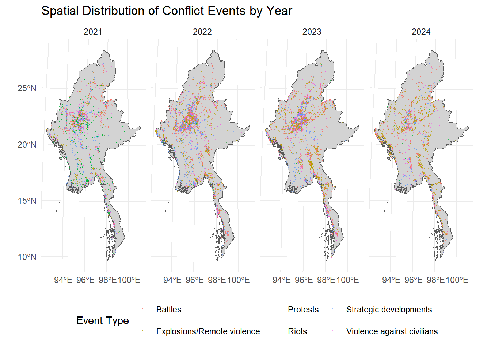
Insights
From 2021 to 2024, the conflicts in Myanmar have escalated significantly, evolving from largely peaceful protests to increasingly violent confrontations and armed battles.
2.4 Conflict Hotspots by state & region
2.4.1 Preparing the hotspots
# Ensure the CRS of both datasets match
conflict_acled_sf_data <- st_transform(conflict_acled_sf_data, crs = st_crs(state_region_subregion_boundaries))
# Perform spatial join to add state/region information to the conflict dataset
acled_with_state_region <- st_join(conflict_acled_sf_data, state_region_subregion_boundaries, join = st_intersects)
# Filter out rows where ST is NA before summarizing
acled_with_state_region <- acled_with_state_region %>%
filter(!is.na(ST))
# Group by state/region and summarize conflict data
conflict_summary_by_state_region <- acled_with_state_region %>%
group_by(ST, event_type, year) %>%
summarise(
total_conflicts = n(),
total_fatalities = sum(fatalities, na.rm = TRUE),
.groups = 'drop'
)
# Convert district boundaries to a regular data frame (non-spatial)
state_region_boundaries_df <- as.data.frame(state_region_subregion_boundaries)
# Merge the summary data with the district boundaries data frame
state_region_boundaries_summary <- state_region_boundaries_df %>%
left_join(conflict_summary_by_state_region, by = c("ST" = "ST"))
# Convert back to an sf object with geometry
state_region_boundaries_summary <- st_as_sf(state_region_boundaries_summary, crs = st_crs(state_region_subregion_boundaries))2.4.2 Plot the Hotspots
# Base map with state/region boundaries
state_region_hotspot_tm <- tm_shape(state_region_boundaries_summary) +
tm_polygons(col = "lightgrey", border.col = "black") +
# Overlay conflict data
tm_shape(conflict_summary_by_state_region) +
tm_dots(
col = "event_type",
palette = "viridis",
size = "total_conflicts",
alpha = 0.6) +
# Layout adjustments
tm_layout(
frame = FALSE, # Remove the frame around the plot
legend.outside = TRUE, # Keep the legend outside
legend.outside.position = "bottom", # Position the legend outside at the bottom
legend.outside.size = 0.1, # Adjust the size of the outside legend (reduce if too large)
) +
# Faceting by state/region
tm_facets(
by = c("ST"),
free.scales = FALSE # Use a common scale across all facets
)
print(state_region_hotspot_tm)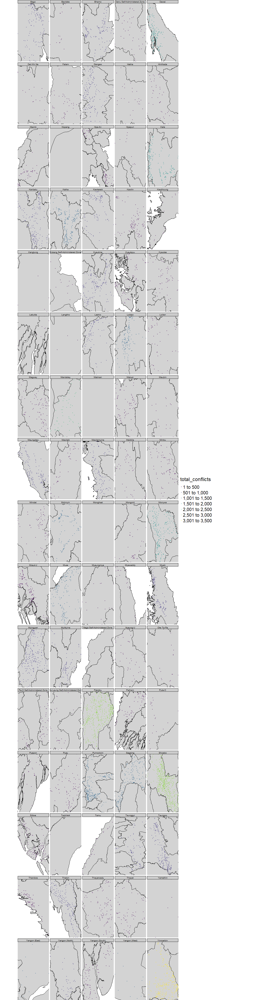
Insights
This map illustrates conflict patterns across a four-year period, revealing significant regional variations. It highlights that certain states and regions experience relatively lower levels of conflict, indicating greater overall peace.
Conversely, other areas show higher concentrations of specific types of conflicts. This distribution helps identify regions with frequent conflict events and those more prone to particular conflict types, offering valuable insights into the geographical and thematic spread of conflicts.
2.4.3 Visualize by Event Type
# Define the conflict types
conflict_types <- c("Battles", "Protests", "Strategic developments", "Explosions/Remote violence", "Riots", "Violence against civilians")
# Initialize an empty list to store summaries
conflict_summaries <- list()
# Loop through each conflict type and summarize the data
for (type in conflict_types) {
summary <- acled_with_state_region %>%
filter(event_type == type) %>%
group_by(ST) %>%
summarise(
total_events = n(),
.groups = 'drop'
)
# Store the summary in the list with the conflict type as the key
conflict_summaries[[type]] <- summary
}
# Convert district boundaries to a regular data frame (non-spatial)
state_region_subregion_boundaries_df <- as.data.frame(state_region_subregion_boundaries)
# Merge each summary with the district boundaries data frame
region_conflict_summaries <- lapply(conflict_summaries, function(summary) {
region_summary <- state_region_subregion_boundaries_df %>%
left_join(summary, by = "ST")
# Convert back to an sf object with geometry
st_as_sf(region_summary, crs = st_crs(state_region_subregion_boundaries))
})
# Rename the list elements for clarity
names(region_conflict_summaries) <- conflict_types# Create a list to store plots
plots <- list()
# Loop through each conflict type to create a plot
for (type in conflict_types) {
plots[[type]] <- tm_shape(region_conflict_summaries[[type]]) +
tm_polygons(
col = "total_events",
palette = "Reds",
title = paste("Number of", type),
border.col = "black",
style = "quantile" # This divides the data into quantiles for better visualization
) +
tm_text(
text = "ST", # Use the column name that contains the region names
size = 0.6, # Adjust the size as needed
col = "black", # Text color
shadow = TRUE, # Optional: Add shadow to make text more readable
remove.overlap = TRUE # Avoid text overlapping
) +
tm_layout(
frame = FALSE, # Remove the frame around the plot
legend.outside = TRUE, # Keep the legend outside
legend.outside.position = "right", # Position the legend outside at the bottom
legend.outside.size = 0.4 # Adjust the size of the outside legend (reduce if too large)
) +
tm_legend(
position = c("right", "bottom") # Position the legend outside at the bottom
)
}
# Arrange all plots in a single view using tm_arrange
combined_plot <- tmap_arrange(plots, ncol = 2, nrow = 3,
legend.position = c("right", "bottom"),
legend.outside = TRUE)
# Print the combined plot
print(combined_plot)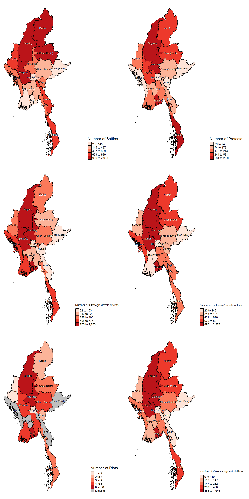
3.0 Deriving Quarterly KDE layers
Kernel Density Estimation (KDE) provides a comprehensive view of where conflicts are occurring by visualizing the density of events across different quarters. By analyzing KDE on a quarterly basis, we can identify areas with high conflict intensity and gain insights into how the distribution of conflicts evolves over time. This approach helps in understanding temporal patterns and hotspots, offering a more detailed perspective on conflict dynamics.
For quarterly KDE layers:
- Subset data by quarter and compute KDE for each subset using
spatstat
Note on Handling Duplicate Points
Duplicate points are removed in the analysis to avoid artificially inflating the density estimate. Including duplicates could lead to an exaggerated representation of conflict hotspots, as each duplicate would incorrectly suggest multiple occurrences of the same event. By removing duplicates, we ensure that the Kernel Density Estimation (KDE) reflects the true intensity and distribution of distinct armed conflict events, providing a more accurate and reliable identification of hotspots.
1. Create a list to store KDE for each quarter
kde_list <- list()2. Get Unique Quarters
quarters <- unique(conflict_acled_sf_data$quarter)3. Perform Kernel Density Estimation (KDE)
boundary_window <- as.owin(national_boundaries)
# Loop over each quarter to process data
for (q in quarters) {
# Filter the dataset for the current quarter
quarter_data <- conflict_acled_sf_data %>%
filter(quarter == q)
# Remove duplicates
coords <- st_coordinates(st_geometry(quarter_data))
if (any(duplicated(coords))) {
quarter_data <- quarter_data %>%
distinct(st_coordinates(st_geometry(.)), .keep_all = TRUE)
}
# Convert the filtered data to a spatial point pattern (ppp object)
quarter_ppp <- as.ppp(st_geometry(quarter_data), W = boundary_window)
# Perform Kernel Density Estimation (KDE)
kde <- density(quarter_ppp, sigma = 0.1) # Adjust sigma as needed for smoothness
# Store KDE in the list
kde_list[[q]] <- kde
}Warning: 2 points were rejected as lying outside the specified windowWarning: 1 point was rejected as lying outside the specified window
Warning: 1 point was rejected as lying outside the specified window
Warning: 1 point was rejected as lying outside the specified window4. Plot the KDE for Each Quarter
par(mfcol=c(5, 3))
# Plot the KDEs for all quarters
for (q in quarters) {
if (!is.null(kde_list[[q]])) {
plot(kde_list[[q]], main = paste("KDE for", q))
} else {
print(paste("No KDE available for quarter:", q))
}
}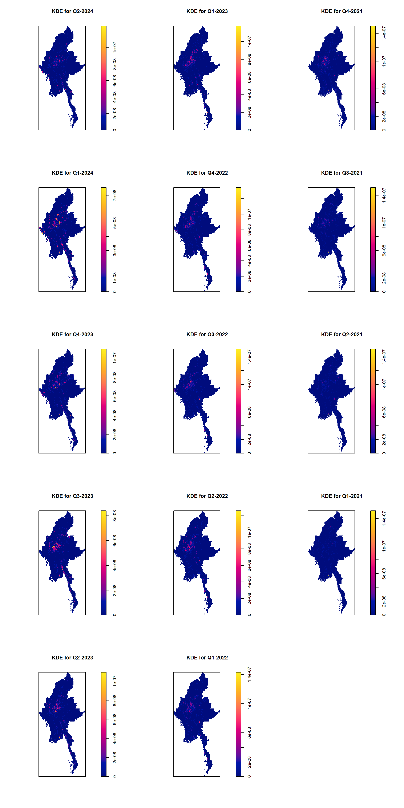
3.0 Performing 2nd-Order Spatial Point Patterns Analysis
Now, we will explore how armed conflict events are distributed and related.
Ripley’s K-function is a useful tool for detecting whether events are clustered or spread out. It measures how the density of events changes with distance, helping to identify clustering or dispersion.
Whereas G-Function examine the nearest-neighbor distances and understand how far apart the nearest events are.
F-Function analyze the distribution of distances from a randomly chosen location to the nearest event
Computing K-Function Estimation
# Initialize list to store K-function results
kfunction_list <- list()
# Get unique quarters from the dataset
quarters <- unique(conflict_acled_sf_data$quarter)
# Loop over each quarter to compute K-function
for (q in quarters) {
# Filter the dataset for the current quarter
quarter_data <- conflict_acled_sf_data %>%
filter(quarter == q)
# Remove duplicates
coords <- st_coordinates(st_geometry(quarter_data))
if (any(duplicated(coords))) {
quarter_data <- quarter_data %>%
distinct(st_coordinates(st_geometry(.)), .keep_all = TRUE)
}
# Convert the filtered data to a spatial point pattern (ppp object)
quarter_ppp <- as.ppp(st_geometry(quarter_data), W = as.owin(national_boundaries))
# Compute the K-function
kfunction <- Kest(quarter_ppp, correction = "border")
# Store the K-function in the list
kfunction_list[[q]] <- kfunction
}Warning: 2 points were rejected as lying outside the specified windowWarning: 1 point was rejected as lying outside the specified window
Warning: 1 point was rejected as lying outside the specified window
Warning: 1 point was rejected as lying outside the specified window
Note
Ripley’s Correction: Provides a more sophisticated adjustment for edge effects by modifying the expected K-function, leading to potentially more accurate results in large areas. Border Correction: Simplifies the adjustment by extending the study area and is less computationally intensive but might be less accurate in areas with significant boundary effects.
We use correction = “border” rather than correction = “Ripley” for our analysis. Our primary goal is to observe the general distribution of conflict hotspots, which will guide more detailed follow-up studies. Given that our focus is on broad patterns rather than precise details, the simpler and less computationally intensive border correction is sufficient. While Ripley’s correction offers more accuracy by adjusting for edge effects, it requires more computational resources and time, which we can afford to forego for this preliminary analysis.
Plotting K-Function
Interpretation:
Above the theoretical line: Indicates clustering of points.
Below the theoretical line: Suggests dispersion or regularity.
Close to the line: Implies a random distribution.
par(mfcol=c(5, 3))
# Plot the K-functions for all quarters
for (q in quarters) {
if (!is.null(kfunction_list[[q]])) {
# Plot K-function
plot(kfunction_list[[q]], . -r ~ r, ylab= "K(d)-r", xlab = "d(m)", main = paste("K-function for Quarter", q))
} else {
print(paste("No K-function available for quarter:", q))
}
}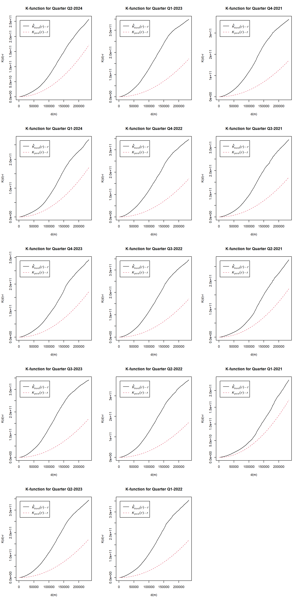
4.0 Deriving Quarterly spatio-temporal KDE layers
# Define the output directory for saving KDE plots
output_dir <- "quarterly_kde_images"
dir.create(output_dir, showWarnings = FALSE)
# Define a list to hold filenames of saved KDE plots
saved_files <- list()
# Define a function to create and save KDE plots for each quarter
save_kde_plot <- function(kde, quarter, output_dir) {
# Create a file path for the KDE image
file_name <- file.path(output_dir, paste0("quarterly_kde_", gsub(" ", "_", quarter), ".png"))
# Open a PNG device to save the plot
png(file_name, width = 800, height = 800)
# Plot KDE
plot(kde, main = paste("Spatio-Temporal KDE for", quarter))
# Close the PNG device
dev.off()
# Print confirmation message
print(paste("Saved:", file_name))
# Return the filename of the saved plot
return(file_name)
}
# Generate and save KDE plots for each quarter in reverse chronological order
for (q in rev(quarters)) {
if (!is.null(kde_list[[q]])) {
file_name <- save_kde_plot(kde_list[[q]], q, output_dir)
saved_files <- append(saved_files, file_name)
} else {
print(paste("No KDE data available for quarter:", q))
}
}[1] "Saved: quarterly_kde_images/quarterly_kde_Q1-2021.png"[1] "Saved: quarterly_kde_images/quarterly_kde_Q2-2021.png"[1] "Saved: quarterly_kde_images/quarterly_kde_Q3-2021.png"[1] "Saved: quarterly_kde_images/quarterly_kde_Q4-2021.png"[1] "Saved: quarterly_kde_images/quarterly_kde_Q1-2022.png"[1] "Saved: quarterly_kde_images/quarterly_kde_Q2-2022.png"[1] "Saved: quarterly_kde_images/quarterly_kde_Q3-2022.png"[1] "Saved: quarterly_kde_images/quarterly_kde_Q4-2022.png"[1] "Saved: quarterly_kde_images/quarterly_kde_Q1-2023.png"[1] "Saved: quarterly_kde_images/quarterly_kde_Q2-2023.png"[1] "Saved: quarterly_kde_images/quarterly_kde_Q3-2023.png"[1] "Saved: quarterly_kde_images/quarterly_kde_Q4-2023.png"[1] "Saved: quarterly_kde_images/quarterly_kde_Q1-2024.png"[1] "Saved: quarterly_kde_images/quarterly_kde_Q2-2024.png"# Load saved images and combine them into an animated GIF
images <- lapply(saved_files, image_read)
# Create an animation from the KDE images
animation <- image_animate(image_join(images), fps = 1)
# Define the path for the GIF animation
gif_path <- "spatio_temporal_kde_animation.gif"
# Save the animation as a GIF file
image_write(animation, path = gif_path)
# Print confirmation that the GIF was saved
print("Spatio-temporal KDE animation saved as spatio_temporal_kde_animation.gif")[1] "Spatio-temporal KDE animation saved as spatio_temporal_kde_animation.gif"# Display the GIF using magick
gif_image <- image_read(gif_path)
print(gif_image) # A tibble: 14 × 7
format width height colorspace matte filesize density
<chr> <int> <int> <chr> <lgl> <int> <chr>
1 GIF 800 800 sRGB FALSE 0 72x72
2 GIF 800 800 sRGB FALSE 0 72x72
3 GIF 800 800 sRGB FALSE 0 72x72
4 GIF 800 800 sRGB FALSE 0 72x72
5 GIF 800 800 sRGB FALSE 0 72x72
6 GIF 800 800 sRGB FALSE 0 72x72
7 GIF 800 800 sRGB FALSE 0 72x72
8 GIF 800 800 sRGB FALSE 0 72x72
9 GIF 800 800 sRGB FALSE 0 72x72
10 GIF 800 800 sRGB FALSE 0 72x72
11 GIF 800 800 sRGB FALSE 0 72x72
12 GIF 800 800 sRGB FALSE 0 72x72
13 GIF 800 800 sRGB FALSE 0 72x72
14 GIF 800 800 sRGB FALSE 0 72x72 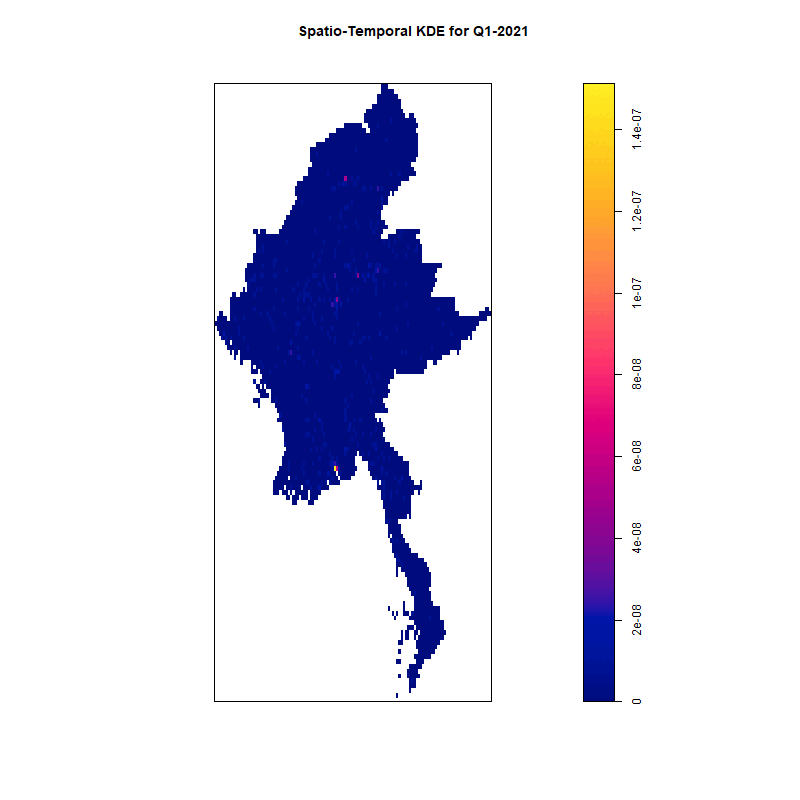
5.0 Performing 2nd-Order Spatio-temporal Point Patterns
# Define the output directory for saving K-function plots
kfunction_output_dir <- "quarterly_kfunction_images"
dir.create(kfunction_output_dir, showWarnings = FALSE)
# Define a list to hold filenames of saved K-function plots
kfunction_files <- list()
# Define a function to create and save K-function plots for each quarter
save_kfunction_plot <- function(kfunction, quarter, output_dir) {
# Create a file path for the K-function image
file_name <- file.path(output_dir, paste0("quarterly_kfunction_", gsub(" ", "_", quarter), ".png"))
# Open a PNG device to save the plot
png(file_name, width = 800, height = 800)
# Plot K-function
plot(kfunction, . -r ~ r, ylab = "K(d) - d", xlab = "d (m)", main = paste("Ripley's K-function for Quarter", quarter))
# Close the PNG device
dev.off()
# Print confirmation message
print(paste("Saved:", file_name))
# Return the filename of the saved plot
return(file_name)
}
# Save K-function plots for each quarter
for (q in rev(quarters)) {
if (!is.null(kfunction_list[[q]])) {
file_name <- save_kfunction_plot(kfunction_list[[q]], q, kfunction_output_dir)
kfunction_files <- append(kfunction_files, file_name)
} else {
print(paste("No K-function data available for quarter:", q))
}
}[1] "Saved: quarterly_kfunction_images/quarterly_kfunction_Q1-2021.png"[1] "Saved: quarterly_kfunction_images/quarterly_kfunction_Q2-2021.png"[1] "Saved: quarterly_kfunction_images/quarterly_kfunction_Q3-2021.png"[1] "Saved: quarterly_kfunction_images/quarterly_kfunction_Q4-2021.png"[1] "Saved: quarterly_kfunction_images/quarterly_kfunction_Q1-2022.png"[1] "Saved: quarterly_kfunction_images/quarterly_kfunction_Q2-2022.png"[1] "Saved: quarterly_kfunction_images/quarterly_kfunction_Q3-2022.png"[1] "Saved: quarterly_kfunction_images/quarterly_kfunction_Q4-2022.png"[1] "Saved: quarterly_kfunction_images/quarterly_kfunction_Q1-2023.png"[1] "Saved: quarterly_kfunction_images/quarterly_kfunction_Q2-2023.png"[1] "Saved: quarterly_kfunction_images/quarterly_kfunction_Q3-2023.png"[1] "Saved: quarterly_kfunction_images/quarterly_kfunction_Q4-2023.png"[1] "Saved: quarterly_kfunction_images/quarterly_kfunction_Q1-2024.png"[1] "Saved: quarterly_kfunction_images/quarterly_kfunction_Q2-2024.png"# Load saved images and combine them into an animated GIF
kfunction_images <- lapply(kfunction_files, image_read)
# Create an animation from the K-function images
kfunction_animation <- image_animate(image_join(kfunction_images), fps = 1)
# Define the path for the GIF animation
kfunction_gif_path <- "spatio_temporal_kfunction_animation.gif"
# Save the animation as a GIF file
image_write(kfunction_animation, path = kfunction_gif_path)
# Print confirmation that the GIF was saved
print("Ripley's K-function animation saved as spatio_temporal_kfunction_animation.gif")[1] "Ripley's K-function animation saved as spatio_temporal_kfunction_animation.gif"# Display the GIF using magick
kfunction_gif_image <- image_read(kfunction_gif_path)
print(kfunction_gif_image)# A tibble: 14 × 7
format width height colorspace matte filesize density
<chr> <int> <int> <chr> <lgl> <int> <chr>
1 GIF 800 800 sRGB FALSE 0 72x72
2 GIF 800 800 sRGB FALSE 0 72x72
3 GIF 800 800 sRGB FALSE 0 72x72
4 GIF 800 800 sRGB FALSE 0 72x72
5 GIF 800 800 sRGB FALSE 0 72x72
6 GIF 800 800 sRGB FALSE 0 72x72
7 GIF 800 800 sRGB FALSE 0 72x72
8 GIF 800 800 sRGB FALSE 0 72x72
9 GIF 800 800 sRGB FALSE 0 72x72
10 GIF 800 800 sRGB FALSE 0 72x72
11 GIF 800 800 sRGB FALSE 0 72x72
12 GIF 800 800 sRGB FALSE 0 72x72
13 GIF 800 800 sRGB FALSE 0 72x72
14 GIF 800 800 sRGB FALSE 0 72x72 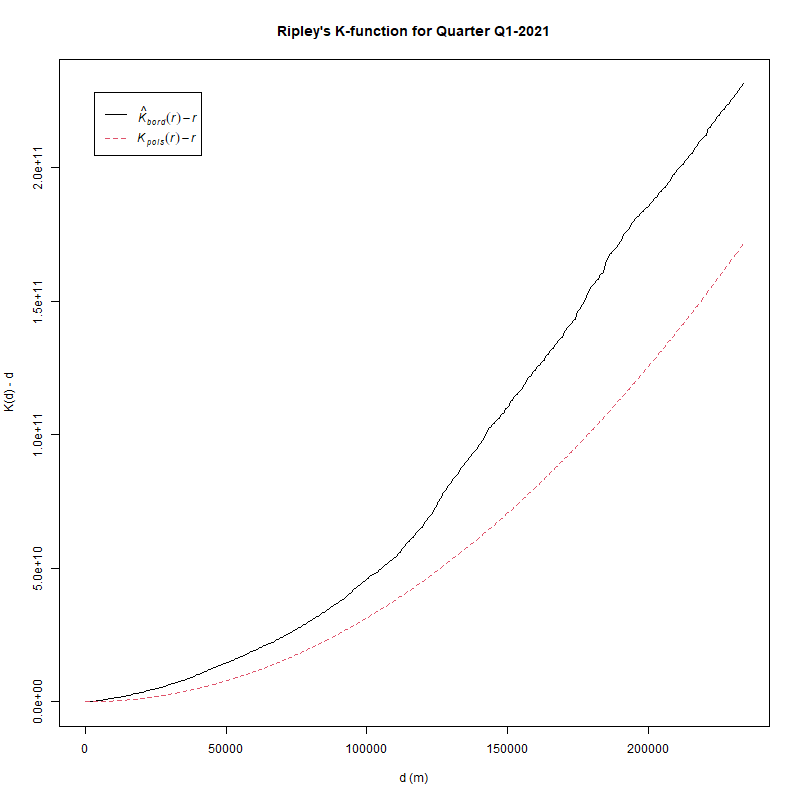
6.0 KDE and Spatio-temporal KDE layers on openstreetmap of Myanmar
6.1 Download OSM Data for Mynmar
# Get bounding box for Myanmar
bbox_myanmar <- getbb("Yangon")
# Create Overpass query
query <- opq(bbox = bbox_myanmar)
# Download data
osm_data <- osmdata_sf(query)# Create a basic plot of the OSM data using tmap
tm_shape(osm_data$osm_points) +
tm_dots( # Using tm_dots instead of tm_lines for point data
col = "blue", # Color of the dots
size = 0.01, # Size of the dots (adjust as needed)
alpha = 0.7 # Transparency of the dots
) +
tm_layout(
frame = FALSE, # Remove the frame around the plot
legend.outside = TRUE, # Place the legend outside the plot
legend.outside.position = "bottom", # Position the legend outside at the bottom
legend.outside.size = 0.1 # Adjust the size of the outside legend (reduce if too large)
) +
tm_scale_bar() # Add a scale bar to the map6.2 Extract Points and Prepare Data for KDE
tmap_mode("plot")tmap mode set to plottingacled_sf %>%
filter(year == 2024 |
event_type == "Polticial Violence") %>%
tm_shape() +
tm_dots()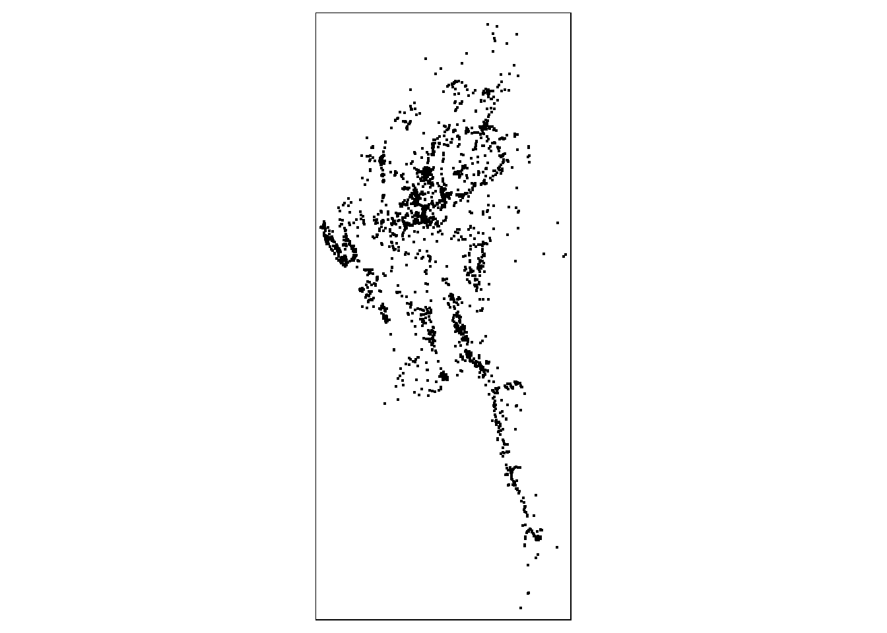
# Prepare a list to store tmap objects for each quarter
tmap_list <- list()
# Loop through each quarter
for (q in quarters) {
# Filter the dataset for the current quarter
quarter_data <- conflict_acled_sf_data %>%
filter(quarter == q)
# Remove duplicates
coords <- st_coordinates(st_geometry(quarter_data))
if (any(duplicated(coords))) {
quarter_data <- quarter_data %>%
distinct(st_coordinates(st_geometry(.)), .keep_all = TRUE)
}
# Create a tmap visualization
tmap_plot <- tm_shape(state_region_subregion_boundaries) +
tm_polygons() +
tm_shape(quarter_data) +
tm_dots(size = 0.01, col = "event_type", title = "Conflicts") +
tm_layout(title = paste("Conflicts for", q),
title.size = 1.2,
legend.outside = TRUE)
# Store the tmap object in the list
tmap_list[[q]] <- tmap_plot
}
# Print all tmap plots
for (q in quarters) {
if (!is.null(tmap_list[[q]])) {
print(tmap_list[[q]])
} else {
print(paste("No data available for quarter:", q))
}
}